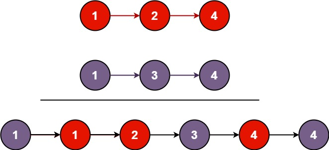

21. 合并两个有序链表
本题学习状态正在读取学习记录…下次复习：—
按 M 快速切换薄弱标记题目与约束
将两个升序链表合并为一个新的 升序 链表并返回。新链表是通过拼接给定的两个链表的所有节点组成的。
示例 1：

输入：l1 = [1,2,4], l2 = [1,3,4]
输出：[1,1,2,3,4,4]
示例 2：
输入：l1 = [], l2 = []
输出：[]
示例 3：
输入：l1 = [], l2 = [0]
输出：[0]
提示：
- 两个链表的节点数目范围是
[0, 50] -100 <= Node.val <= 100l1和l2均按 非递减顺序 排列
核心不变量
tail 始终指向已合并部分的最后一个节点。
完整推导
思路推导
-
直觉与痛点（找车头）：
合并就像把两副排好序的扑克牌洗在一起。由于我们需要返回一个新链表的头节点（车头），如果直接操作，你需要先写一堆代码来判断：到底
list1的第一个节点是车头，还是list2的第一个节点是车头？如果其中一个是空链表怎么办？这会导致开头充满繁琐的边界判断。 -
破局思路（引入“虚拟头节点/哨兵节点”）：
我们干脆自己造一个“假车头（Dummy Node）”。
不需要管谁大谁小，我们直接把合并后的节点一个个挂在这个“假车头”后面。等全部合并完了，我们直接返回
dummy.next，这不就是真正的车头了吗！ -
逻辑推演（拉链法双指针）：
- 创建
dummy节点，并用一个指针curr指向它，作为我们“穿针引线”的针头。 - 比较
list1和list2当前节点的值： - 谁的值小，就把
curr.next指向谁。 - 然后把那个被选中的节点往前挪一步。
- 针头
curr也往前挪一步，准备挂下一个节点。 - 收尾：如果循环结束时，有一个链表还没遍历完（说明剩下的数都比前面的大），直接把
curr.next指向剩下的这串链表即可（链表的优势，不需要一个个挪，直接接上头就行）。
Java 实现（迭代法）
C++ 实现
实现来源：经典解法实现
- 哑头节点 + tail 指针，逐个比较两链表当前节点
- 小的接在 tail 后，对应指针后移
- 一条走空后，另一条剩余部分整体接上
class Solution { public: ListNode* mergeTwoLists(ListNode* l1, ListNode* l2) { ListNode dummy(0), *tail = &dummy; while (l1 && l2) { if (l1->val <= l2->val) { tail->next = l1; l1 = l1->next; } else { tail->next = l2; l2 = l2->next; } tail = tail->next; } tail->next = l1 ? l1 : l2; return dummy.next; } };Python 实现
实现来源：经典解法实现
- 哑头节点 + tail 指针，逐个比较两链表当前节点
- 小的接在 tail 后，对应指针后移
- 一条走空后，另一条剩余部分整体接上
class Solution: def mergeTwoLists(self, l1: ListNode, l2: ListNode) -> ListNode: dummy = ListNode() tail = dummy while l1 and l2: if l1.val <= l2.val: tail.next, l1 = l1, l1.next else: tail.next, l2 = l2, l2.next tail = tail.next tail.next = l1 if l1 else l2 return dummy.nextGo 实现
实现来源：经典解法实现
- 哑头节点 + tail 指针，逐个比较两链表当前节点
- 小的接在 tail 后，对应指针后移
- 一条走空后，另一条剩余部分整体接上
func mergeTwoLists(l1 *ListNode, l2 *ListNode) *ListNode { dummy := &ListNode{} tail := dummy for l1 != nil && l2 != nil { if l1.Val <= l2.Val { tail.Next = l1; l1 = l1.Next } else { tail.Next = l2; l2 = l2.Next } tail = tail.Next } if l1 != nil { tail.Next = l1 } else { tail.Next = l2 } return dummy.Next }C 实现
实现来源：经典解法实现
- 哑头节点 + tail 指针，逐个比较两链表当前节点
- 小的接在 tail 后，对应指针后移
- 一条走空后，另一条剩余部分整体接上
struct ListNode* mergeTwoLists(struct ListNode* l1, struct ListNode* l2) { struct ListNode dummy; dummy.next = NULL; struct ListNode* tail = &dummy; while (l1 && l2) { if (l1->val <= l2->val) { tail->next = l1; l1 = l1->next; } else { tail->next = l2; l2 = l2->next; } tail = tail->next; } tail->next = l1 ? l1 : l2; return dummy.next; } - 创建
/**
* Definition for singly-linked list.
* public class ListNode {
* int val;
* ListNode next;
* ListNode() {}
* ListNode(int val) { this.val = val; }
* ListNode(int val, ListNode next) { this.val = val; this.next = next; }
* }
*/
class Solution {
public ListNode mergeTwoLists(ListNode list1, ListNode list2) {
// 1. 创建虚拟头节点（值随意，这里给个 -1），化解复杂的边界情况
ListNode dummy = new ListNode(-1);
// curr 充当游标（针头），负责把节点一个个串起来
ListNode curr = dummy;
// 2. 只要两个链表都有数字，就开始“拉链”比大小
while (list1 != null && list2 != null) {
if (list1.val <= list2.val) {
curr.next = list1; // 把 list1 的节点串上来
list1 = list1.next; // list1 指针后移
} else {
curr.next = list2; // 把 list2 的节点串上来
list2 = list2.next; // list2 指针后移
}
// 针头跟着后移，准备串下一个节点
curr = curr.next;
}
// 3. 收尾处理：当其中一个链表被掏空后，把另一个链表剩下的部分一撸到底接上去
curr.next = (list1 != null) ? list1 : list2;
// 4. 返回真正的车头（虚拟头节点的下一个节点）
return dummy.next;
}
}
复杂度
- 时间复杂度：O(N + M)。其中 N 和 M 分别为两个链表的长度。因为每次循环只会让一个指针后移，直到遍历完其中一个链表，总循环次数不会超过 N + M。
- 空间复杂度：O(1)。我们仅仅用了几个指针在原有的节点上进行穿针引线，完全没有开辟任何新的节点空间（除了一开始那个用来方便操作的 dummy 节点）。
易错点与扩展（极其经典的连环追问）
- 面试进阶追问：“你能用【递归】写一遍吗？”
-
递归思维的优化思路：合并两个有序链表，等于“提取其中较小的头节点”，加上“合并剩余的两个链表”。
-
优雅的递归代码：
class Solution {
public ListNode mergeTwoLists(ListNode list1, ListNode list2) {
// 递归的终止条件
if (list1 == null) return list2;
if (list2 == null) return list1;
// 谁小，谁就当老大（当前的头节点）
if (list1.val < list2.val) {
// 老大的后面挂着：剩下的 list1 和 完整的 list2 合并的结果
list1.next = mergeTwoLists(list1.next, list2);
return list1;
} else {
list2.next = mergeTwoLists(list1, list2.next);
return list2;
}
}
}
- 两种解法的权衡（给面试官的加分回答）：虽然递归解法代码只有短短几行，看起来极其优雅，但在工程实践中，由于递归会消耗方法栈空间，它的空间复杂度是 O(N + M)。如果链表非常长，可能会导致栈溢出 (StackOverflowError)。所以如果在真实业务代码中，迭代法（拉链法）配合虚拟头节点是更安全、更优秀的选择。
这道题里的 “虚拟头节点（Dummy Node）” 技巧，在后面的链表删除、链表翻转等题目中会频繁出现。记住它，它能拯救你无数脑细胞！